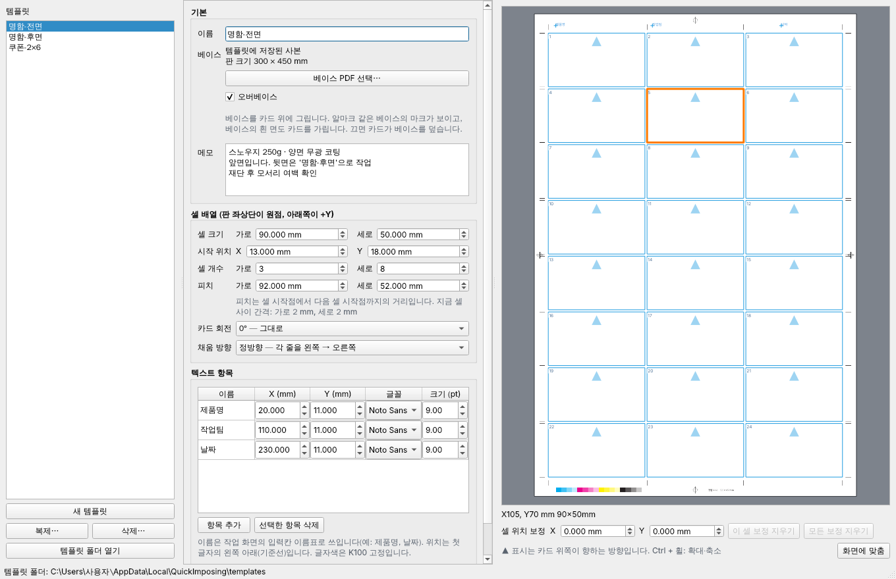

사용법
처음 쓰는 분을 위한 안내
시작하기
Windows 10 또는 11 (64비트)에서 씁니다. 따로 설치할 프로그램은 없습니다. 내려받은 zip의 압축을 풀고, 나온 QuickImposing 폴더를 원하는 곳에 통째로 둡니다. 폴더 안의 파일을 따로 옮기지 마세요.
프로그램은 두 개입니다. 판 구조는 편집기에서 한 번 만들고, 평소에는 작업 프로그램만 씁니다.
QuickImposingEditor.exe
템플릿 편집기
베이스, 셀 배열, 텍스트 자리, 메모를 템플릿으로 만듭니다. 새 사양이 생겼을 때 한 번.
QuickImposing.exe
작업 프로그램
템플릿을 골라 셀에 카드를 넣고 PDF를 저장합니다. 매 작업마다.
베이스란
베이스는 카드를 앉힐 판의 바탕이 되는 PDF입니다. 인쇄소에서 판을 짤 때 늘 쓰는 바탕 판(재단선, 맞춤표, 컬러바 같은 마크가 들어 있고 카드 자리는 비어 있는 판)을 PDF 한 장으로 저장한 것이라고 생각하면 됩니다.
퀵 임포징은 이 베이스 위에 카드를 정해진 칸에 올려 판 PDF를 만듭니다. 그래서 결과 PDF의 크기는 베이스의 크기와 같고, 재단선이나 마크도 프로그램이 새로 그리지 않고 베이스에 있는 것을 그대로 씁니다.
(비어 있음) 1234
베이스에 들어 있는 것 (예)
- 재단선 · 알마크 재단할 위치를 알려 주는 선과 표시
- 맞춤표 인쇄할 때 색판을 맞추는 표시(레지스트레이션 마크)
- 컬러바 인쇄 색을 확인하는 색 띠
- 카드 자리 비워 둡니다. 여기에 셀 배열대로 카드가 들어갑니다. 점선 칸은 설명을 위한 것이고 실제 베이스에는 없어도 됩니다
베이스 준비하기
지금 쓰고 있는 판 파일(쿽, 일러스트레이터 등)에서 시작하면 됩니다.
- 카드와 작업마다 바뀌는 글자를 지웁니다. 카드 디자인, 날짜, 제품명, 작업팀처럼 작업할 때마다 달라지는 것은 빼고, 매번 같은 마크와 라벨만 남깁니다. 바뀌는 글자는 템플릿의 텍스트 항목으로 자리를 만들어 작업할 때 입력합니다.
- 판 크기 그대로 1페이지 PDF로 저장합니다. PDF 페이지 크기가 곧 판 크기입니다(예: 300 × 450 mm).
- CMYK로 저장합니다. 카드와 마찬가지로 인쇄용 CMYK PDF여야 합니다.
- 페이지 회전을 걸지 않습니다. PDF에 페이지 회전이 설정되어 있으면 베이스로 고를 수 없습니다. 판 방향 그대로 저장합니다.
- 카드 자리는 비워 둡니다. 흰 상자나 배경색도 두지 않습니다. 베이스는 카드 위에 그려지므로(아래 "오버베이스"), 카드 자리에 무엇이 있으면 카드를 가리거나 카드 위에 찍힙니다.
앞면과 뒷면은 마크 위치가 다르므로 베이스도 따로 준비해 템플릿을 하나씩 만듭니다. 뒷면 템플릿은 앞면 템플릿을 복제한 뒤 베이스만 바꾸면 편합니다.
베이스와 셀 위치
셀 배열의 위치(mm)는 베이스의 왼쪽 위 모서리를 (0, 0)으로 잽니다. 오른쪽으로 갈수록 X, 아래로 갈수록 Y가 커집니다. 판의 마크와 겹치지 않도록 카드 자리 안에 셀을 놓습니다. 프로그램은 셀이 마크에 걸치는지 따로 검사하지 않으니 편집기 미리보기로 확인해 주세요. 셀이 서로 겹치거나 판 밖으로 나가면 노란 안내가 나옵니다.
오버베이스: 베이스를 카드 위에 그리기
판 PDF는 여러 장을 겹쳐 놓은 것과 같습니다. 오버베이스는 베이스를 카드 위에 올릴지 정하는 설정이며, 기본으로 켜져 있습니다. 쿽에서 판을 짤 때와 같은 순서입니다.
켜짐 (기본)
- 텍스트 항목
- 베이스
- 카드
카드 가장자리에 걸친 알마크 · 재단선 · 열 사이 흰 띠가 카드 위에 보입니다. 베이스의 흰 면은 카드를 가립니다.
꺼짐
- 텍스트 항목
- 카드
- 베이스
카드가 베이스를 덮습니다. 카드에 걸친 마크는 카드에 가려 보이지 않습니다.
판에 넣는 글자(텍스트 항목)는 어느 쪽이든 맨 위에 찍힙니다.
알아 둘 점
- 베이스를 고르면 템플릿 안에 사본이 저장됩니다. 원본 파일을 옮기거나 지워도 템플릿은 그대로 쓸 수 있습니다. 반대로 원본 베이스를 고쳤다면 편집기에서 베이스 PDF 선택으로 다시 골라야 템플릿에 반영됩니다.
- 베이스의 내용(색, 마크, 글자)은 바꾸지 않고 그대로 결과 PDF에 들어갑니다.
- 여러 PC에서 함께 쓰면 모든 PC를 같은 버전으로 맞춰 주세요. 오버베이스는 0.13.0부터 있는 설정이라, 그보다 오래된 버전은 같은 템플릿으로도 카드가 베이스를 덮습니다.
1. 템플릿 만들기
템플릿 편집기에서 합니다. 아래 표의 예는 화면 속 "명함-전면" 템플릿의 값입니다.

- 이름을 적습니다. 예:
명함-전면. 저장한 뒤에는 바꿀 수 없습니다. - 베이스 PDF 선택을 눌러 미리 준비한 베이스를 고릅니다. 무엇을 베이스로 쓰는지는 베이스란을 먼저 읽어 주세요.
- 오버베이스는 그대로 켜 둡니다(기본). 베이스를 카드 위에 그려 마크가 보이게 합니다. 자세한 차이는 오버베이스를 보세요.
- 작업자에게 알려 줄 내용(용지, 재단 방향, 주의 사항 등)이 있으면 메모에 적습니다. 메모는 작업 프로그램에서 보이고, PDF에는 들어가지 않습니다.
- 셀 배열을 입력합니다. 단위는 mm이고, 베이스(판)의 왼쪽 위가 (0, 0)입니다.
| 입력 | 뜻 | 예 |
|---|---|---|
| 셀 크기 | 카드 한 장이 판 위에서 차지하는 크기 | 90 × 50 |
| 시작 위치 | 첫 번째(왼쪽 위) 셀의 왼쪽 위 좌표 | X 13, Y 18 |
| 셀 개수 | 가로 · 세로 칸 수 | 3 × 8 |
| 피치 | 셀 시작점에서 다음 셀 시작점까지의 거리. 셀 크기 + 간격 | 92 × 52 (간격 2mm) |
| 카드 회전 | 카드를 돌리는 각도. 미리보기의 삼각형이 카드 위쪽 방향 | 0° (그대로) |
| 채움 방향 | 여러 파일을 한 번에 넣을 때 각 줄을 채우는 방향 | 정방향 |
- 판에 넣을 글자(제품명, 날짜 등)가 있으면 항목 추가로 자리를 만듭니다. 이름은 작업 화면의 입력칸 이름이 됩니다. 글자색은 K100입니다.
- 오른쪽 미리보기로 위치를 확인합니다. 셀을 누르면 그 셀의 좌표와 크기가 표시되므로 사양서의 수치와 대조할 수 있습니다. 셀 하나만 어긋나 있으면 그 셀을 누르고 셀 위치 보정 X · Y에 옮길 거리(mm)를 넣습니다.
- 템플릿 저장을 누릅니다.
후면용은 전면 템플릿을 복제한 뒤 베이스를 후면 베이스로 바꿔 저장합니다.
2. 작업하기
작업 프로그램에서 합니다.

- 템플릿을 고릅니다. 판과 빈 셀(하늘색 선)이 보입니다. 템플릿이 많으면 메모 검색(Ctrl+F)으로 고객사 · 제품 이름을 찾습니다.
- 텍스트를 입력합니다. 비워 둔 칸은 PDF에 넣지 않습니다.
- 데이터(카드 PDF)를 넣습니다.
- 셀을 누르고 데이터 불러오기를 누릅니다. 셀을 두 번 눌러도 됩니다.
- 탐색기에서 PDF를 셀 위로 끌어다 놓아도 됩니다.
- 파일을 여러 개 고르면, 선택한 셀부터 파일 이름 순서(1, 2, … 10, 11)로 차례로 채웁니다.
- 폴더를 미리보기에 끌어다 놓으면, 폴더 안의 PDF를 이름 순서로 이어 채웁니다.
- PDF 저장을 누르고 저장 위치와 이름을 정합니다.
카드 PDF는 1페이지여야 합니다. 셀보다 큰 부분은 가려지고, 작으면 남는 부분이 비어 나옵니다.
저장과 덮어쓰기
저장하면 같은 폴더에 파일 4개가 생깁니다.
| 파일 | 내용 |
|---|---|
이름.pdf | 인쇄용 판 PDF |
이름.qiproj.json | 프로젝트. 나중에 다시 열어 빠진 카드를 넣거나 바꿀 때 씁니다 |
이름.png | 미리보기 그림 |
이름.report.json | 처리 기록. 문제를 알릴 때 함께 보내 주세요 |
같은 이름의 파일이 있으면 이름-2로 저장할지, 덮어쓸지 묻습니다. 카드 PDF와 저장 위치는 같은 드라이브에 두세요.
인쇄 색상 주의사항
CMYK 인쇄 전용입니다. 넣은 PDF의 색을 바꾸지 않고 그대로 옮깁니다.
- 카드와 베이스는 CMYK로 만든 인쇄용 PDF를 씁니다. RGB가 섞여 있으면 인쇄 색이 달라질 수 있습니다.
- 회색 · 검정 글씨는 K 단색으로 만드는 것이 좋습니다.
- 카드에 숨겨 둔 레이어도 인쇄됩니다.
- 화면 미리보기는 배치 확인용입니다. 처음 쓰는 종류의 카드는 시험 인쇄로 색을 확인해 주세요.
새 버전으로 바꾸기
- 두 프로그램을 모두 닫습니다.
- 기존
QuickImposing폴더를 지우거나 이름을 바꿔 둡니다. - 새
QuickImposing폴더를 같은 자리에 둡니다.
만들어 둔 템플릿과 저장한 프로젝트 · PDF는 프로그램 폴더 밖에 있어 그대로 남습니다. 지금 쓰는 버전은 작업 프로그램의 도구 → 프로그램 정보에서 봅니다. 여러 PC에서 함께 쓰면 모든 PC를 같은 버전으로 맞춰 주세요.
찾는 답이 없으면 Discussions에 물어봐 주세요.